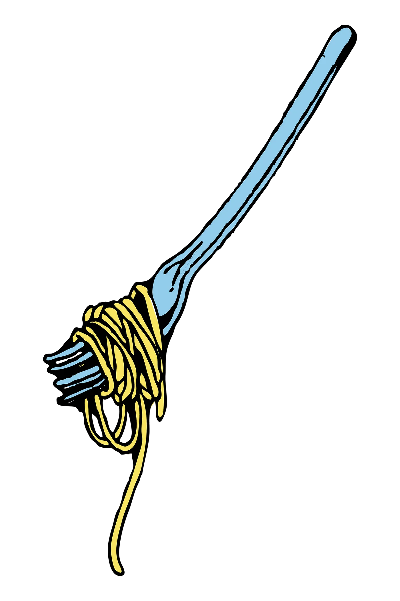
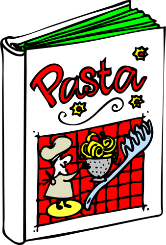
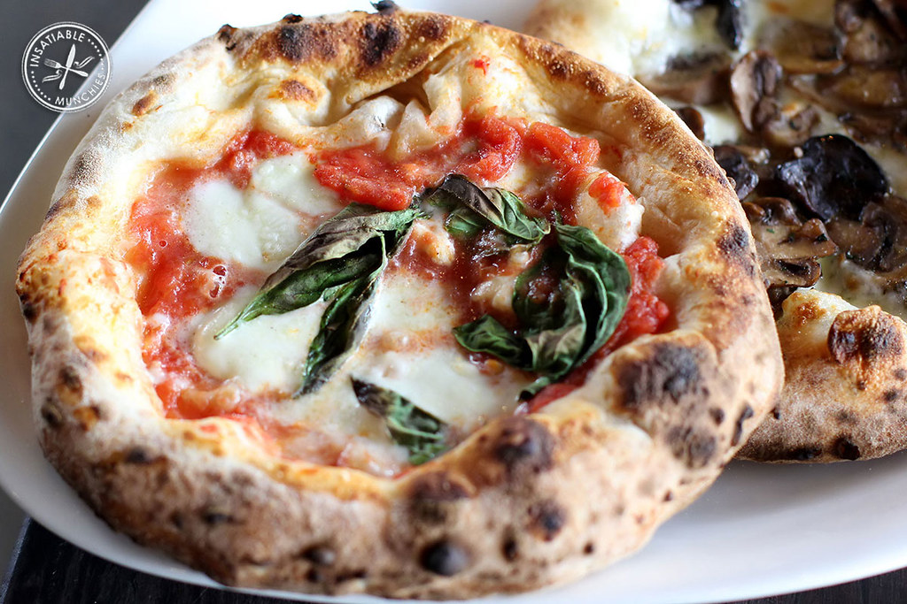
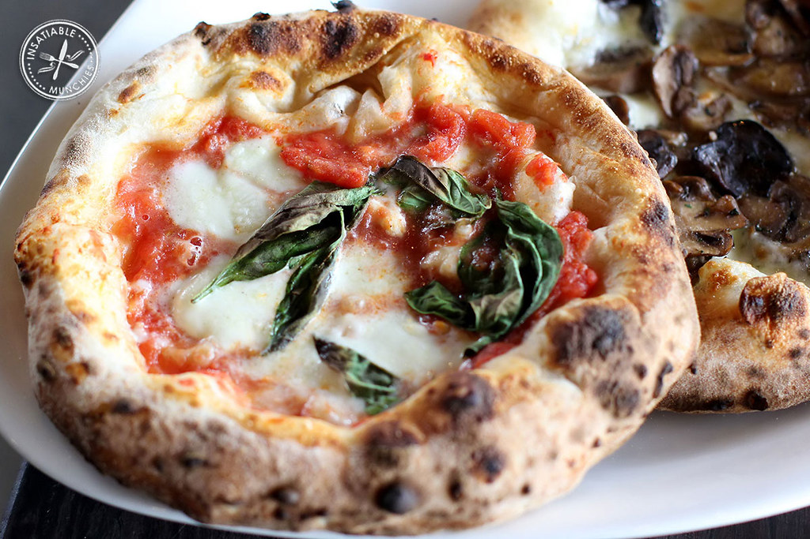

RECETARIO ITALIANO
por Andrea Seijas
 La cocina Italiana está compuesta por un amplio número de platos deliciosos!
Dependiendo de la zona geográfica dentro del país, destacan diversos platos.
En el norte de Italia los platos más cocinados y consumidos son: la pasta cocida, las sopas, distintas carnes hervidas, el vino o la mantequilla. Los platos más famosos y destacados de esta zona son el carpaccio y el rissoto.
En la zona central del país, los alimentos que destacan son: el aceite, los embutidos, una amplia variedad de carnes... El plato más elaborado y consumido en esta zona es la famosa bistecca: un solomillo con mucha tradición!
Por último, en la parte sur, destaca la clásica y famosa pizza aunque también se hace una gran variedad de pasta. Estos platos son los más reconocidos internacionalmente y existen una gran variedad de éstos.
En este recetario se presentarán tres de las elaboraciones más destacadas de Italia: La pizza, los espaguetti a la carbonara y el famoso tiramisú.
 


| Tiempo: | 15 minutos |
| Servicios: | 4 personas |
| Tiempo: | 20 minutos |
| Servicios: | 8 personas |
| Tiempo: | 30 minutos |
| Servicios: | 8 personas |
Javier Somoza, CC BY-SA 4.0
«Magherita Napolitana Pizza» por insatiablemunch está bajo la licencia CC BY 2.0.
Fotografía tomada de pxhere:CC0 Dominio publico

Recetario Italiano by Andrea Seijas is licensed under a Creative Commons Reconocimiento-NoComercial-CompartirIgual 4.0 Internacional License.